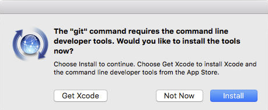

Setup
Create a Github account
Git is a version control system that lets you track who made changes to what when and has options for easily updating a shared or public version of your code on github.com.
You will need a supported web browser.
Prior to the session, we recommend you use your “official” university email to create an account on github.com. You can skip this step if you already have a github.com and you know the username/password you used to log in to it.
- GitHub accounts are free, and - with your University affiliation - you may be able to get a “Pro” GitHub account for free (you need to email the GitHub Education team for this).
- Note that a free account will suffice for all of what we are doing in the training session, so you don’t need to do this before class.
- Please consider what personal information you’d like to reveal. For example, you may want to review these instructions for keeping your email address private provided at GitHub.
Install git
Windows
Download the Git for Windows installer, also known as GitBash.
Run the installer and follow the steps below:
- Click on “Next” four times (two times if you’ve previously installed Git). You don’t need to change anything in the Information, location, components, and start menu screens.
- From the dropdown menu, “Choosing the default editor used by Git”, select “Use the Vim editor by default” and click on “Next”.
- On the page that says “Adjusting the name of the initial branch in new repositories”, ensure that “Let Git decide” is selected. This will ensure the highest level of compatibility for our lessons.
- Ensure that “Git from the command line and also from 3rd-party software” is selected and click on “Next”. (If you don’t do this Git Bash will not work properly, requiring you to remove the Git Bash installation, re-run the installer and to select the “Git from the command line and also from 3rd-party software” option.)
- Select “Use bundled OpenSSH”.
- Ensure that “Use the native Windows Secure Channel Library” is selected and click on “Next”.
- Ensure that “Checkout Windows-style, commit Unix-style line endings” is selected and click on “Next”.
- Ensure that “Use Windows’ default console window” is selected and click on “Next”.
- Ensure that “Default (fast-forward or merge) is selected and click”Next”
- Ensure that “Git Credential Manager” is selected and click on “Next”.
- Ensure that “Enable file system caching” is selected and click on “Next”.
- Click on “Install”.
- Click on “Finish” or “Next”.
If your “HOME” environment variable is not set (or you don’t know what this is):
Open command prompt (Open Start Menu then type
cmdand press Enter)Type the following line into the command prompt window exactly as shown:
setx HOME "%USERPROFILE%"
- Press Enter, you should see
SUCCESS: Specified value was saved. - Quit command prompt by typing
exitthen pressing Enter
This will provide you with both Git and Bash in the Git Bash program.
MacOS
The easiest way to install git on a Mac is by installing Xcode Command Line Tools (note: you do not need all of Xcode!, which takes a lot more space on your hard drive).
To do this, open your Terminal application and type:
git --versionIf you don’t have git installed already, a popup will appear:

Press on the blue “Install” button and, after entering your password, git should be installed.
Linux
Depending on the Linux distribution on your laptop, you will need to open a Terminal application and execute one of the following commands:
Debian/Ubuntu
For the latest stable version for your release of Debian/Ubuntu
apt-get install gitFor Ubuntu, this PPA provides the latest stable upstream Git version
add-apt-repository ppa:git-core/ppa
apt update; apt install gitFedora
yum install git # up to Fedora 21dnf install git # Fedora 22 and laterGentoo
emerge --ask --verbose dev-vcs/gitArch Linux
pacman -S gitopenSUSE
zypper install gitMageia
urpmi gitNix/NixOS
nix-env -i gitFreeBSD
pkg install gitSolaris 9/10/11
pkgutil -i gitSolaris 11 Express
pkg install developer/versioning/gitOpenBSD
pkg_add gitAll materials copyright Sydney Informatics Hub, University of Sydney